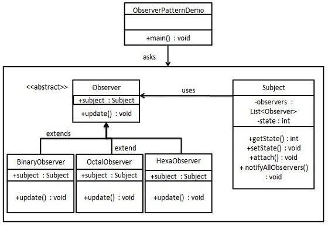

Patrón Observador
El patrón observador es un patrón de diseño de comportamiento que define una relación de dependencia de uno a muchos. Cuando el estado de un objeto cambia, todos sus dependientes reciben una notificación y se actualizan automáticamente.
Cuando existe una relación de uno a muchos entre objetos, se utiliza el patrón observador (Observer Pattern). Por ejemplo, cuando un objeto es modificado, automáticamente notifica a los objetos que dependen de él. El patrón observador pertenece a los patrones de comportamiento.
Introducción
Intención
Crea una relación de dependencia de uno a muchos entre objetos. Cuando el estado de un objeto cambia, todos los objetos que dependen de él reciben una notificación y se actualizan automáticamente.
Problema principal que resuelve
- El patrón observador resuelve el problema de cómo notificar automáticamente a otros objetos dependientes cuando el estado de un objeto cambia, manteniendo al mismo tiempo un bajo acoplamiento y una alta colaboración entre objetos.
Escenarios de uso
- Cuando un cambio de estado de un objeto necesita actualizar simultáneamente otros objetos.
Método de implementación
- Definir la interfaz del observador: contiene un método de actualización.
- Crear observadores concretos: implementan la interfaz del observador y definen el comportamiento al recibir una notificación.
- Definir la interfaz del sujeto: contiene métodos para agregar, eliminar y notificar a los observadores.
- Crear sujetos concretos: implementan la interfaz del sujeto, gestionan la lista de observadores y les notifican cuando cambia el estado.
Código clave
- Lista de observadores: se mantiene una lista de observadores en el sujeto.
Ejemplos de aplicación
- Sistema de subastas: el subastador actúa como sujeto, los postores como observadores; cuando el precio de la subasta se actualiza, se notifica a todos los postores.
- Historia de Viaje al Oeste: el Bodhisattva rocía agua como cambio de estado, y la tortuga vieja, como observador, observa este cambio.
Ventajas
- Acoplamiento abstracto: entre el observador y el sujeto existe un acoplamiento abstracto.
- Mecanismo de activación: se establece un mecanismo de activación y notificación para cuando cambia el estado.
Desventajas
- Problemas de rendimiento: si hay muchos observadores, el proceso de notificación puede llevar tiempo.
- Dependencia circular: puede provocar llamadas circulares y fallos del sistema.
- Falta de detalles del cambio: el observador no sabe cómo cambia el sujeto, solo sabe que ocurrió el cambio.
Recomendaciones de uso
- Úselo cuando se necesite reducir el acoplamiento entre objetos y cuando los cambios de estado de un objeto deban desencadenar cambios en otros objetos.
- Considere usar las clases de soporte integradas de Java para el patrón observador, como
java.util.Observable和java.util.Observer。
Notas
- Evitar referencias circulares: preste atención a la relación de dependencia entre observador y sujeto para evitar referencias circulares.
- Ejecución asíncrona: considere usar notificaciones asíncronas para evitar que un único punto de fallo bloquee todo el sistema.
Estructura
El patrón observador incluye los siguientes roles principales:
- Sujeto (Subject): también llamado observado u observable, es un objeto con estado y mantiene una lista de observadores. El sujeto proporciona métodos para agregar, eliminar y notificar a los observadores.
- Observador (Observer): es el objeto que recibe las notificaciones del sujeto. El observador debe implementar un método de actualización; cuando recibe la notificación del sujeto, llama a dicho método para realizar la actualización.
- Sujeto concreto (Concrete Subject): es la clase de implementación concreta del sujeto. Mantiene la lista de observadores y les notifica cuando cambia su estado.
- Observador concreto (Concrete Observer): es la clase de implementación concreta del observador. Implementa el método de actualización y define las operaciones concretas que debe ejecutar al recibir la notificación del sujeto.
El patrón observador logra un acoplamiento flojo entre objetos al desacoplar el sujeto y el observador. Cuando el estado del sujeto cambia, todos los observadores que dependen de él reciben la notificación y realizan la actualización correspondiente.
Implementación
El patrón observador utiliza tres clases: Subject, Observer y Client. El objeto Subject tiene métodos para vincular observadores al objeto Client y desvincularlos del objeto Client. CreamosSubjectla clase,Observerla clase abstracta y extienden la clase abstractaObserverlas clases de entidad.
ObserverPatternDemo, nuestra clase de demostración usaSubjecty objetos de clases de entidad para demostrar el patrón observador.

Paso 1
Cree la clase Subject.
Subject.java
Paso 2
Cree la clase Observer.
Observer.java
Paso 3
Cree las clases de observadores concretos.
BinaryObserver.java
OctalObserver.java
HexaObserver.java
Paso 4
UseSubjecty objetos de observadores concretos.
ObserverPatternDemo.java
Paso 5
Ejecute el programa y muestre el resultado:
First state change: 15 Hex String: F Octal String: 17 Binary String: 1111 Second state change: 10 Hex String: A Octal String: 12 Binary String: 1010Otras extensiones
fatcheung
134***7025@qq.com
El patrón observador, según mi entendimiento, es el proceso en el que el observador se suscribe al estado del observado, y cuando el estado del observado cambia, notifica a todos los observadores suscritos. Por lo tanto, ¿no sería esta siguiente forma más fácil de entender?
Interfaz del observador:
public abstract class Observer { public abstract void update(String msg); }Primer observador:
public class F_Observer extends Observer { public void update(String msg) { System.out.println(F_Observer.class.getName() + " : " + msg); } }Segundo observador:
public class S_Observer extends Observer { public void update(String msg) { System.out.println(S_Observer.class.getName() + " : " + msg); } }Tercer observador:
public class T_Observer extends Observer { public void update(String msg) { System.out.println(T_Observer.class.getName() + " : " + msg); } }El observado:
public class Subject { private List<Observer> observers = new ArrayList<>(); //状态改变 public void setMsg(String msg) { notifyAll(msg); } //订阅 public void addAttach(Observer observer) { observers.add(observer); } //通知所有订阅的观察者 private void notifyAll(String msg) { for (Observer observer : observers) { observer.update(msg); } } }Método de uso:
public class Main { public static void main(String[] args) { F_Observer fObserver = new F_Observer(); S_Observer sObserver = new S_Observer(); T_Observer tObserver = new T_Observer(); Subject subject = new Subject(); subject.addAttach(fObserver); subject.addAttach(sObserver); subject.addAttach(tObserver); subject.setMsg("msg change"); } }Resultado de la ejecución: test.F_Observer : msg changetest.S_Observer : msg changetest.T_Observer : msg changefatcheung
134***7025@qq.com
DHclly
335***817@qq.com
Implementé el ejemplo en C# y lo optimicé un poco:
Subject.cs
public class Subject { private readonly List<Observer> _observers = new List<Observer>(); private int _state; public int State { get => _state; set { _state = value; NotifyAllObservers(); } } public void AddObserver(Observer observer) { observer.Subject = this; _observers.Add(observer); } public void NotifyAllObservers() => _observers.ForEach(o => o.Update()); }Observer.cs
public abstract class Observer { public Subject Subject; public abstract void Update(); }BinaryObserver.cs
public class BinaryObserver:Observer { public BinaryObserver() { } public BinaryObserver(Subject subject) { subject.AddObserver(this); } public override void Update() { Console.WriteLine($"Binary String: {Convert.ToString(Subject.State, 2)}"); } }OctalObserver.cs
public class OctalObserver:Observer { public OctalObserver() { } public OctalObserver(Subject subject) { subject.AddObserver(this); } public override void Update() { Console.WriteLine($"Octal String: {Convert.ToString(Subject.State, 8)}"); } }HexaObserver.cs
public class HexaObserver:Observer { public HexaObserver() { } public HexaObserver(Subject subject) { subject.AddObserver(this); } public override void Update() { Console.WriteLine($"Hex String: {Convert.ToString(Subject.State, 16)}"); } }Demo.cs
public void NumberChange() { Subject subject1 = new Subject(); new BinaryObserver(subject1); new OctalObserver(subject1); new HexaObserver(subject1); Console.WriteLine("1 state=15"); subject1.State = 15; Console.WriteLine("1 state=10"); subject1.State = 10; Subject subject2 = new Subject(); subject2.AddObserver(new BinaryObserver()); subject2.AddObserver(new OctalObserver()); subject2.AddObserver(new HexaObserver(subject1)); Console.WriteLine("2 state=15"); subject1.State = 15; Console.WriteLine("2 state=10"); subject1.State = 10; }DHclly
335***817@qq.com
jade
guo***u_study@163.com
Definición del patrón Observer: este patróndefine una relación de dependencia de uno a muchos entre objetos, el objeto Subject es el uno, el objeto Observer es el muchos.Cuando el estado del objeto Subject cambia, todos los objetos Observer que dependen de ese objeto Subject reciben una notificación，y se actualizan automáticamente。
Analizando cuidadosamente la definición, para entender con precisión el patrón observador hay que prestar atención a tres puntos principales:
1. Se define una relación de dependencia de uno a muchos entre objetos;
2. Cuando el estado del objeto Subject cambia, todos los objetos Observer que dependen de él reciben una notificación;
3. Después de recibir la notificación, el objeto Observer se actualiza automáticamente, en lugar de ser pasivo;
Todos los demás puntos son detalles menores y dependen de los requisitos específicos del negocio. Por ejemplo:
1. El rol Subject ¿debe definirse como clase? Por ejemplo, el java.util.Observable integrado; ¿o debe definirse como interfaz para evitar el problema de que Java no admite herencia múltiple? Por ejemplo, la práctica recomendada en 'Head First Design Patterns'.
2. ¿En qué momento se debe suscribir al tema (o registrar el observador)? ¿Al mismo tiempo que se instancia el objeto observador? Como en el ejemplo del autor; ¿o lo decide el cliente de forma autónoma? Como en la primera nota compartida de esta publicación.
3. ¿Debería implementarse la función de cancelar la suscripción (o cancelar el registro)?
4. Cuando el objeto sujeto notifica al observador, ¿lleva el mensaje? En otras palabras, ¿es un mensaje 'push' (empujar)? Como en el ejemplo del autor; ¿o un mensaje 'pull' (extraer)?
5. ¿Admite múltiples hilos (multithreading)?
jade
guo***u_study@163.com
iwh冬
630***826@qq.com
Dirección de referencia
Después de ver el código anterior, lo implementé en Kotlin:
/** * 观察者 */ interface Observer { fun <T : Any?> update(msg: T) } /** * 观察者1,2,3 */ class Ob1(private val id: Int = 0) : Observer { override fun <T> update(msg: T) { println("接收消息，观察者$id:$msg") } } //这里是kotlin的类委托 class Ob2 : Observer by Ob1(2) class Ob3 : Observer by Ob1(3) /** * 被观察者（订阅者） */ class Subject { //存放观察者 private var observers = ArrayList<Observer>() //订阅观察者 fun attach(ob: Observer) { observers.add(ob) } //设置数据 fun <T : Any?> setMsg(msg: T) { this.notify(msg) } //更新数据 private fun <T : Any?> notify(msg: T) { for (iOb in this.observers) { iOb.update(msg) } } } /** * Kotlin版 观察者模式 * @author IWH * Des：kotlin1.3支持主函数省略参数 */ fun main() { val sub = Subject().apply { attach(Ob1()) attach(Ob2()) attach(Ob3()) } with(sub){ setMsg(123) setMsg("hello world") setMsg('A') setMsg(null) } }iwh冬
630***826@qq.com
Dirección de referencia
shenshaonian
134***3404@qq.com
Guanyin rocía agua
public class TortoisObserverDemo { public static void main(String[] args){ GuanYin guanYin = new GuanYin(); new SmallTortoise(guanYin); new BigTortoise(guanYin); guanYin.watering(); } } public class GuanYin { private List<Observer> observers = new ArrayList<Observer>(); public void watering(){ System.out.println("观音洒水"); notifyAllTortoise(); } private void notifyAllTortoise() { int i = 0; for (Observer o:observers) { o.flyToGuanYin(); System.out.println(++i); } } public void attach(Observer observer) { observers.add(observer); } } public abstract class Observer { protected GuanYin guanYin; protected abstract void flyToGuanYin(); } public class SmallTortoise extends Observer { public SmallTortoise(GuanYin guanYin) { this.guanYin = guanYin; this.guanYin.attach(this); } @Override protected void flyToGuanYin() { System.out.println("SmallTortoise fly to guanyin"); } } public class BigTortoise extends Observer { public BigTortoise(GuanYin guanYin) { this.guanYin = guanYin; this.guanYin.attach(this); } @Override protected void flyToGuanYin() { System.out.println("BigTortoise fly to guanyin"); } }shenshaonian
134***3404@qq.com
郭艺宾
guo***990@163.com
Utilizando el JDK para implementar el patrón observador, en la relación uno a muchos, el código de una parte:
import java.util.Observable; public class Subject extends Observable { private int state; public int getState() { return state; } public void setState(int state) { this.state = state; this.setChanged(); this.notifyObservers(); } }Código de la parte de muchos:
import java.util.Observable; import java.util.Observer; public class BinaryObserver implements Observer { public BinaryObserver(Observable observable) { observable.addObserver(this); } @Override public void update(Observable o, Object arg) { if (o instanceof Subject) { System.out.println("Binary String: " + Integer.toBinaryString(((Subject) o).getState())); } } }import java.util.Observable; import java.util.Observer; public class HexaObserver implements Observer { public HexaObserver(Observable observable) { observable.addObserver(this); } @Override public void update(Observable o, Object arg) { if (o instanceof Subject) { System.out.println("Binary String: " + Integer.toHexString(((Subject) o).getState())); } } }import java.util.Observable; import java.util.Observer; public class OctalObserver implements Observer { public OctalObserver(Observable observable) { observable.addObserver(this); } @Override public void update(Observable o, Object arg) { if (o instanceof Subject) { System.out.println("Binary String: " + Integer.toOctalString(((Subject) o).getState())); } } }Ejecute la clase de prueba:
public class ObserverPatternDemo { public static void main(String[] args) { Subject subject = new Subject(); new BinaryObserver(subject); new OctalObserver(subject); new HexaObserver(subject); System.out.println("First state change: 15"); subject.setState(15); System.out.println("Second state change: 10"); subject.setState(10); } }Resultado de la ejecución:
郭艺宾
guo***990@163.com
infiniteH
212***971@qq.com
Objeto observado y objeto observador
Un objeto observado está asociado a múltiples objetos observadores
Por lo tanto, el objeto observado tiene un contenedor para almacenar los objetos observadores
El objeto observador también tiene una variable miembro del objeto observado
Cuando cambia alguna propiedad del objeto observado y se desea que todos los objetos observadores asociados respondan, se llama al método de notificación dentro del método que cambia la propiedad. Por lo tanto, es necesario declarar un método de notificación, que consiste en recorrer todos los observadores e invocar un método común a todos ellos, es decir, el método de actualización (update).
En esencia, después de modificar una propiedad, se recorre un método de todos los elementos; de hecho, también es polimorfismo.
infiniteH
212***971@qq.com
Siskin.xu
sis***@sohu.com
Manera en Python:
# Observer Pattern with Python Code from abc import abstractmethod,ABCMeta # 创建一个目标对象Subject，如果有多种不同的目标，可以抽象subject，用子对象实现 class Subject: # 建立一个私有集合，存放观察者对象 _observers = [] _state = "" def getState(self): return self._state def setState(self,inState): self._state = inState self.notifyAllObservers() # 追加观察者 def attach(self, inObserver): self._observers.append(inObserver) # 通知观察者 def notifyAllObservers(self): for aObser in self._observers : aObser.update() # 创建观察者抽象类 class Observer(metaclass=ABCMeta): subject = Subject() @abstractmethod def update(self): pass def __init__(self): self.subject = Subject() # 实现具体观察者 class BinaryObserver(Observer): def __init__(self,inSubject): self.subject = inSubject self.subject.attach(self) def update(self): print("Binary String : " + str(bin(self.subject.getState()))) class OctalObserver(Observer): def __init__(self,inSubject): self.subject = inSubject self.subject.attach(self) def update(self): print("Octal String : " + str(oct(self.subject.getState()))) class HexaObserver(Observer): def __init__(self,inSubject): self.subject = inSubject self.subject.attach(self) def update(self): print("Hex String : " + str(hex(self.subject.getState()))) # 调用输出 if __name__ == '__main__': aSubject = Subject() HexaObserver(aSubject) OctalObserver(aSubject) BinaryObserver(aSubject) print("First state change : 15") aSubject.setState(15); print("======================") print("First state change : 10") aSubject.setState(10);Siskin.xu
sis***@sohu.com
glory
809***053@qq.com
Tu relación de composición entre observador y observado no es buena; se puede cambiar a una relación de dependencia:
public class Subject { private List observers = new ArrayList(); public void addObserver(Observer observer){ observers.add(observer); } protected void notifyObservers(){ for (Observer o:observers){ o.update(this); } } } public abstract class Observer { private Action action; /** * subject 观察谁 ,action 发生变化做什么 */ public void observe(E subject,Action action){ subject.addObserver(this); this.action=action; } public void update(Subject subject){ this.action.update(subject); } public interface Action{ void update(E subject); } } public class Patient extends Subject { private int age; private String disease; public Patient(int age, String disease) { this.age = age; this.disease = disease; } public void setAge(int age) { this.age = age; this.notifyObservers(); } public void setDisease(String disease) { this.disease = disease; this.notifyObservers(); } public int getAge() { return age; } public String getDisease() { return disease; } } public class Doctor extends Observer {} public class Test { public static void main(String[] args) { Patient patient = new Patient(10,"高血压"); new Doctor().observe(patient, (subject)-> System.out.println("医生观察到患者变化：年龄-"+subject.getAge()+"岁,疾病-"+subject.getDisease()) ); new Nurse().observe(patient, (subject)-> System.out.println("护士观察到患者变化：年龄-"+subject.getAge()+"岁,疾病-"+subject.getDisease())); System.out.println("============变化1========"); patient.setAge(20); System.out.println("============变化2========"); patient.setDisease("糖尿病"); } } public class Nurse extends Observer {}Resultado de salida:
glory
809***053@qq.com
Desempleado
gjh***04@qq.com
Esta forma parece más fácil de entender.
public class Subject { private List observers = new ArrayList(); private int state; public int getState() { return state; } public void setState(int state) { this.state = state; } public void addObserver(Observer observer) { observers.add(observer); } public void notifyAllObservers() { for (Observer observer : observers) { observer.update(this); } } } public abstract class Observer { public abstract void update(Subject subject); } public class HexaObserver extends Observer{ @Override public void update(Subject subject) { System.out.println( "Hex String: " + Integer.toHexString( subject.getState() ).toUpperCase() ); } } public class ObserverPatternDemo { public static void main(String[] args) { Subject subject = new Subject(); subject.addObserver(new HexaObserver()); subject.addObserver(new OctalObserver()); subject.addObserver(new BinaryObserver()); System.out.println("First state change: 15"); subject.setState(15); subject.notifyAllObservers(); System.out.println("Second state change: 10"); subject.setState(10); subject.notifyAllObservers(); } }Desempleado
gjh***04@qq.com
RUNOOB
429***967@qq.com
El patrón de observador puede lograr un acoplamiento flexible, haciendo que la relación entre el sujeto y los observadores sea más flexible. Facilita la adición de nuevos observadores, así como la incorporación, eliminación o modificación dinámica de observadores en tiempo de ejecución. Además, el patrón de observador cumple con el principio de abierto/cerrado, lo que permite que el sujeto y los observadores cambien de forma independiente sin afectarse mutuamente.
A continuación se muestra un ejemplo sencillo del patrón de observador: supongamos un sistema de monitoreo meteorológico; el sujeto son los datos meteorológicos y los observadores son diferentes dispositivos de visualización que muestran los cambios de los datos meteorológicos en tiempo real:
// 主题 - 天气数据 interface WeatherData { void registerObserver(WeatherObserver observer); void removeObserver(WeatherObserver observer); void notifyObservers(); } // 观察者 - 显示设备 interface WeatherObserver { void update(float temperature, float humidity, float pressure); } // 具体主题 - 天气数据 class WeatherStation implements WeatherData { private List<WeatherObserver> observers; private float temperature; private float humidity; private float pressure; public WeatherStation() { this.observers = new ArrayList<>(); } public void registerObserver(WeatherObserver observer) { observers.add(observer); } public void removeObserver(WeatherObserver observer) { observers.remove(observer); } public void notifyObservers() { for (WeatherObserver observer : observers) { observer.update(temperature, humidity, pressure); } } public void setMeasurements(float temperature, float humidity, float pressure) { this.temperature = temperature; this.humidity = humidity; this.pressure = pressure; notifyObservers(); } } // 具体观察者 - 显示设备 class DisplayDevice implements WeatherObserver { private String name; public DisplayDevice(String name) { this.name = name; } public void update(float temperature, float humidity, float pressure) { System.out.println(name + " - Temperature: " + temperature + " Humidity: " + humidity + " Pressure: " + pressure); } } // 客户端代码 public class Main { public static void main(String[] args) { WeatherStation weatherStation = new WeatherStation(); DisplayDevice display1 = new DisplayDevice("Display 1"); DisplayDevice display2 = new DisplayDevice("Display 2"); weatherStation.registerObserver(display1); weatherStation.registerObserver(display2); weatherStation.setMeasurements(25.5f, 65.2f, 1013.2f); // Output: // Display 1 - Temperature: 25.5 Humidity: 65.2 Pressure: 1013.2 // Display 2 - Temperature: 25.5 Humidity: 65.2 Pressure: 1013.2 weatherStation.removeObserver(display2); weatherStation.setMeasurements(27.8f, 62.8f, 1010.5f); // Output: // Display 1 - Temperature: 27.8 Humidity: 62.8 Pressure: 1010.5 } }En el ejemplo anterior, definimos la interfaz del sujeto WeatherData y la interfaz del observador WeatherObserver, la clase concreta del sujeto WeatherStation y la clase concreta del observador DisplayDevice. A través del proceso de registrar observadores, actualizar el estado y notificar a los observadores, se logra la interacción entre el sujeto y los observadores.
RUNOOB
429***967@qq.com